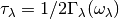
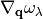
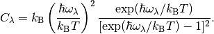
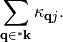
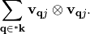
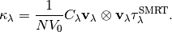
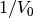

How to read the results stored in hdf5 files¶
How to use HDF5 python library¶
It is assumed that python-h5py is installed on the computer you
interactively use. In the following, how to see the contents of
.hdf5 files in the interactive mode of Python. Usually for running
interactive python, ipython is recommended to use but not the
plain python. In the following example, an MgO result of thermal
conductivity calculation is loaded and thermal conductivity tensor at
300 K is watched.
In [1]: import h5py
In [2]: f = h5py.File("kappa-m111111.hdf5")
In [3]: f.keys()
Out[3]:
[u'frequency',
u'gamma',
u'group_velocity',
u'gv_by_gv',
u'heat_capacity',
u'kappa',
u'kappa_unit_conversion',
u'mesh',
u'mode_kappa',
u'qpoint',
u'temperature',
u'weight']
In [4]: f['kappa'].shape
Out[4]: (101, 6)
In [5]: f['kappa'][:]
Out[5]:
array([[ 0.00000000e+00, 0.00000000e+00, 0.00000000e+00,
0.00000000e+00, 0.00000000e+00, 0.00000000e+00],
[ 5.86834069e+03, 5.86834069e+03, 5.86834069e+03,
1.20936823e-15, 0.00000000e+00, -2.05720313e-15],
[ 1.37552313e+03, 1.37552313e+03, 1.37552313e+03,
2.81132320e-16, 0.00000000e+00, -5.00076366e-16],
...,
[ 6.56974871e+00, 6.56974871e+00, 6.56974871e+00,
1.76632276e-18, 0.00000000e+00, -2.30450472e-18],
[ 6.50316555e+00, 6.50316555e+00, 6.50316555e+00,
1.74843437e-18, 0.00000000e+00, -2.28116103e-18],
[ 6.43792061e+00, 6.43792061e+00, 6.43792061e+00,
1.73090513e-18, 0.00000000e+00, -2.25828616e-18]])
In [6]: f['temperature'][:]
Out[6]:
array([ 0., 10., 20., 30., 40., 50., 60., 70.,
80., 90., 100., 110., 120., 130., 140., 150.,
160., 170., 180., 190., 200., 210., 220., 230.,
240., 250., 260., 270., 280., 290., 300., 310.,
320., 330., 340., 350., 360., 370., 380., 390.,
400., 410., 420., 430., 440., 450., 460., 470.,
480., 490., 500., 510., 520., 530., 540., 550.,
560., 570., 580., 590., 600., 610., 620., 630.,
640., 650., 660., 670., 680., 690., 700., 710.,
720., 730., 740., 750., 760., 770., 780., 790.,
800., 810., 820., 830., 840., 850., 860., 870.,
880., 890., 900., 910., 920., 930., 940., 950.,
960., 970., 980., 990., 1000.])
In [7]: f['kappa'][30]
Out[7]:
array([ 2.18146513e+01, 2.18146513e+01, 2.18146513e+01,
5.84389577e-18, 0.00000000e+00, -7.63278476e-18])
In [8]: g = f['gamma'][30]
In [9]: import numpy as np
In [10]: g = np.where(g > 0, g, -1)
In [11]: lifetime = np.where(g > 0, 1.0 / (2 * 2 * np.pi * g), 0)
Details of kappa-*.hdf5 file¶
Files name, e.g. kappa-m323220.hdf5, is determined by some
specific options. mxxx, show the numbers of sampling
mesh. sxxx and gxxx appear optionally. sxxx gives the
smearing width in the smearing method for Brillouin zone integration
for phonon lifetime, and gxxx denotes the grid number. Using the
command option of -o, the file name can be modified slightly. For
example -o nac gives kappa-m323220.nac.hdf5 to
memorize the option --nac was used.
Currently kappa-*.hdf5 file (not for the specific grid points)
contains the properties shown below.
mesh¶
(Versions 1.10.11 or later)
The numbers of mesh points for reciprocal space sampling along
reciprocal axes, 
frequency¶
Phonon frequencies. The physical unit is THz, where THz is in the ordinal frequency not the angular frequency.
The array shape is (irreducible q-point, phonon band).
gamma¶
Imaginary part of self energy. The physical unit is THz, where THz is in the ordinal frequency not the angular frequency.
The array shape for all grid-points (irreducible q-points) is (temperature, irreducible q-point, phonon band).
The array shape for a specific grid-point is (temperature, phonon band).
Phonon lifetime () may
be estimated from gamma.  has to be multiplied with
has to be multiplied with
gamma values in the hdf5 file to convert the unit of ordinal
frequency to angular frequency. Zeros in gamma values mean that
those elements were not calculated such as for three acoustic modes at
 point. The below is the copy-and-paste from the
previous section to show how to obtain phonon lifetime in pico
second:
point. The below is the copy-and-paste from the
previous section to show how to obtain phonon lifetime in pico
second:
In [8]: g = f['gamma'][30]
In [9]: import numpy as np
In [10]: g = np.where(g > 0, g, -1)
In [11]: lifetime = np.where(g > 0, 1.0 / (2 * 2 * np.pi * g), 0)
gamma_isotope¶
Isotope scattering of  .
The physical unit is same as that of gamma.
.
The physical unit is same as that of gamma.
The array shape is same as that of frequency.
group_velocity¶
Phonon group velocity, . The physical unit is , where THz is in the ordinal frequency not the angular frequency.
The array shape is (irreducible q-point, phonon band, 3 = Cartesian coordinates).
heat_capacity¶
Mode-heat-capacity defined by

The physical unit is eV/K.
The array shape is (temperature, irreducible q-point, phonon band).
kappa¶
Thermal conductivity tensor. The physical unit is W/m-K.
The array shape is (temperature, 6 = (xx, yy, zz, yz, xz, xy)).
mode-kappa¶
Thermal conductivity tensors at k-stars ( ):
):

The sum of this over corresponding to
irreducible q-points gives  (kappa).
(kappa).
The physical unit is W/m-K. Each tensor element is the sum of tensor
elements on the members of , i.e., symmetrically
equivalent q-points by crystallographic point group and time reversal
symmetry.
The array shape is (temperature, irreducible q-point, phonon band, 6 = (xx, yy, zz, yz, xz, xy)).
gv_by_gv¶
Outer products of group velocities for k-stars
() for each irreducible q-point and phonon band
( ):
):

The physical unit is
 , where THz is in the
ordinal frequency not the angular frequency.
, where THz is in the
ordinal frequency not the angular frequency.
The array shape is (irreducible q-point, phonon band, 6 = (xx, yy, zz, yz, xz, xy)).
q-point¶
Irreducible q-points in reduced coordinates.
The array shape is (irreducible q-point, 3 = reduced coordinates in reciprocal space).
temperature¶
Temperatures where thermal conductivities are calculated. The physical unit is K.
weight¶
Weights corresponding to irreducible q-points. Sum of weights equals to the number of mesh grid points.
ave_pp¶
Averaged phonon-phonon interaction in ,
 :
:

This is not going to be calculated in the RTA thermal coductivity
calculation mode by default. To calculate this, --full_pp option
has to be specified (see –full_pp: Calculate all elements of phonon-phonon interaction strength).
kappa_unit_conversion¶
This is used to convert the physical unit of lattice thermal
conductivity made of heat_capacity, group_velocity, and
gamma, to W/m-K. In the single mode relaxation time (SMRT) method,
a mode contribution to the lattice thermal conductivity is given by

For example of some single mode,  is calculated by:
is calculated by:
kappa_unit_conversion / weight.sum() * heat_capacity[30, 2, 0] *
group_velocity[2, 0, 0] ** 2 / (2 * gamma[30, 2, 0])
where  is included in kappa_unit_conversion.
Similary mode-kappa (defined at mode-kappa) is
calculated by:
kappa_unit_conversion / weight.sum() * heat_capacity[30, 2, 0] *
gv_by_gv[2, 0] / (2 * gamma[30, 2, 0])